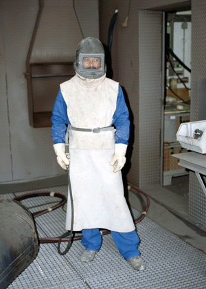

Bei dem Einsatz von Schutzkleidung wird abhängig von dem Einsatzfall unterschiedlicher
Schutz vorgeschrieben:
| – | Freistrahlen mit Freisetzung von Quarzstäuben (z.B. Sandstrahlen von Gebäuden, Entrostungen, Beseitigung von Schweißzunder, Holzstrahlen) | |
|
Strahlhelm mit Fremdbelüftung, Schulter und Körper bedeckende Prallschutzkleidung, Schutzhandschuhe (auch Leder geeignet), Schutzschuhe, Gehörschutz | ||
| – | Freistrahlen mit Freisetzung von Gefahrstoffen (z.B. Blei-Sanierung, PAK-Sanierung, Steinkohle/ Teerpech-Sanierung, Asbest-Sanierung) | |
|
Glatter, einteiliger Schutzanzug mit Fremdbelüftung, Schutzhandschuhe (kein Leder sondern z.B. Nitrilkautschuk; aber reißfest), Schutzschuhe, Gehörschutz | – | "Sandräuber" (Personen die Strahlschutt beräumen) |
|
Einwegschutzanzug mit mindestens partikelfiltrierender Maske der Filterklasse P2, Schutzhandschuhe wie beim Strahler, Schutzschuhe | ||